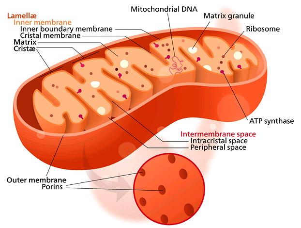
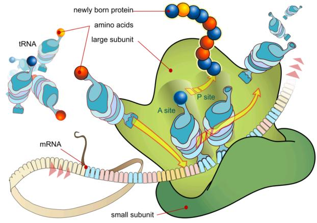

Eukaryote cells are Chimeras, formed by the fusion of two very different organisms, an Archaea and a Bacteria (of the Eubacteria variety). This fusion allowed the development of much larger, more complex cells. The Eukaryote DNA consists of Archaea DNA, Bacterial DNA, and DNA unique to Eukaryote cells. Eukaryote cells are not static, they are very active, and there is a lot going on within then continuously. See particularly Ribosome below. The Golgi Apparatus is also very active, packaging and dispatching proteins assembled by the Ribosomes.
This is a generalized view of an animal Eukaryote cell. Vacuoles (storage compartments) are not shown and do not exist in most animal cells, but do exist in some. Fungus cells, which are very similar to and closely related to animal cells, always contain vacuoles, but much smaller than those in plant cells. All Eukaryote cells contain Mitocondria, which evolved from bacteria that took up residence in the cells.
Illustration by Mariana Ruiz Villarreal (LadyofHats) contributed to the public domain.
More on the origin of Plants and
Animals.
Plant Cells are very similar to Animal Cells, including containing Mitochondria, but also include Chloroplasts, evolved from Cyanobacteria. These carry out photosyntheses, using sunlight to break Carbon Dioxide into Carbon and Oxygen. They also contain large Vacuoles (storage compartments) whereas fungus cells, and such animal cells as have vacuoles, have much smaller ones.
Illustration by Mariana Ruiz Villarreal (LadyofHats), contributed to the Public Domain.
More on the origin of Plants and
Animals.

Mitochondria Cells evolved from a Bacteria engulfed by, but not digested by, Archaea cells during early stages of their evolution into Eukaryote cells. All Eukaryote cells contain Mitochondria except Red Blood Cells. How many depends on the energy needs of the cell type, with human heart cells containing around 5000, liver cells containing around 2000 and muscle cells containing around 500 (they are very small compared to the Eukaryote cells within which they live).
Mitochondria are extremely important because they convert nutrients brought by the bloodstream to ATP, the source of energy within the cell. They also have other very important functions, including the timing of cell death. Illustration by Kelvinsong distributed under license Creative Commons Attribution-ShareAlike v3.0 Unported.
More on the origin of Plants and
Animals.
The plant chloroplasts are the components within a plant cell that performs photosynthesis, using sunlight to break up carbon dioxide into carbon and oxygen. It was originally a cyanobacterium that became embedded in a plant cell, and it still maintains its own separate DNA. It has, however, become much larger and evolved to maximize its benefit to the host cell (more Thylacoid membranes).
The illustration is schematic of higher plant chloroplasts, but chloroplasts vary greatly in size and shape. Not shown in this drawing are starch granuals, which are usually present within the cell. Drawing by Miguelsierra distributed under license Attribution-ShareAlike 4.0 International.
More on the origin of Plants and
Animals.

Illustration by Mariana Ruiz Villarreal (LadyofHats), contributed to the Public Domain. Ribosomes are the tiny dots in the illustrations above. They exist in all living cells, and are essential as the engines of protein production. They must have existed in simpler form as self replicating chemical complexes long before living cells formed, but all the details haven't been worked out yet.
In Eukaryots, DNA strands are read by RNA Polymerase enzymes in the nucleus and the information is transcribed into encoded ribbons of messenger RNA released into the cell cytoplasm. Bacteria and Archaea do not have a nucleus, so the DNA strands are read and transcribed into mRNA by RNA Polymerase enzymes floating in their cytoplasm.
When a Ribosome code reader (small subunit) picks up an mRNA ribbon, it attaches to an assembler (large subunit). It then reads the ribbon sequentially from the cap or "start code" for instructions on how to assemble the appropriate protein. The protein is assembled from amino acids brought to the Ribosome by tRNA modules (transport RNA). When the Ribosome reads the stop code in the mRNA ribbon it releases the protein and the two subunits separate. Of course, in living cells the whole process looks a lot messier than in this illustration.
Viruses have no Ribosomes, so they must parasite living cells and subvert their DNA for the protein production needed during reproduction.
More on the origin of Plants and
Animals.